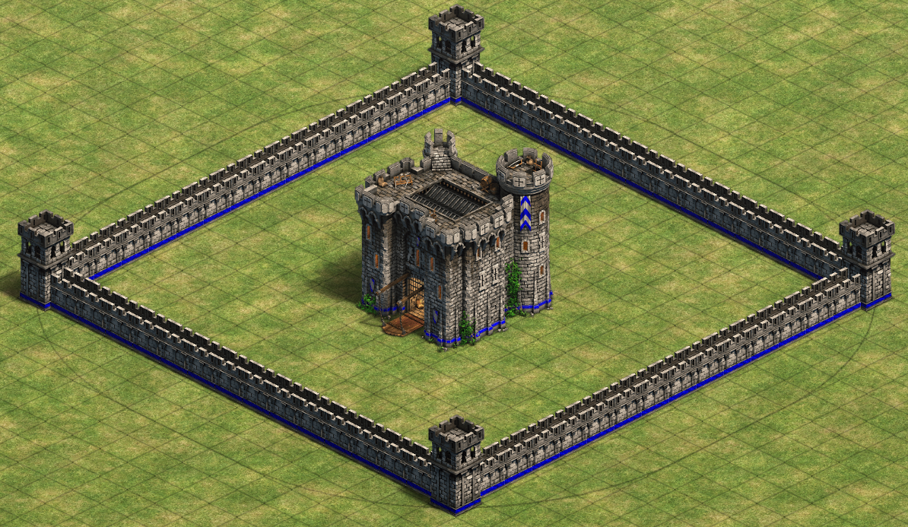

Area¶
The Area object is a powerful object to get access to specific regions on the map.
This page will try to explain a bit on how to use it and what the possibilities are.
First of all, the Area object uses "Method Chaining".
This means that methods inside the Area object return the Area object itself.
This allows you to call another method straight after the first:
1 2 3 4 5 | |
This is perfect for a highly configurable and flexible objects like the Area object.
Why would I use the Area object?¶
If you want to do anything with more than a single coordinate, it's quite the hassle sometimes. That's the problem this object is trying (feature suggestions always welcome!) to solve.
Note
The Area object strength comes from selecting specific pattern/tiles. If you want to do a similar thing with
every tile on the map this object won't help you much.
Examples¶
Below are a couple examples that show why this object can be very useful when working with coordinates.
Creating a stack of units¶
Let's say you want to place 16 units, in a 4x4 area on the map. This is not necessarily difficult to do, it'd probably look something like the following:
1 2 3 4 5 6 7 8 | |
This would create 16 units in a 4x4 area and isn't too bad to read or write.
Though, having an object which manages the area would be a lot cleaner than looping through coordinates.
So, let's see how we'd do it with the Area object.
1 2 3 4 5 6 7 8 9 10 11 | |
Above we can see the creation of a new Area object through the new Object Factory inside a scenario.
We use the select method to select our area.
Note
Keep in mind that Area.select uses an inclusive selection.
This means that doing: area.select(1, 1, 3, 3) will select a 3x3 area.
Castle surrounded by walls¶
Now, the above example was quite a simple one. The real power comes with the configuration! So let's take a more complicated example! Like creating a wall around a castle! This will be quite the difference, so let's do it in steps, first we create the castle and the area object.
1 2 | |
Now let's select the area of the castle itself, so the 4x4 area.
1 2 3 | |
This sets the center of the area to the castles coordinates. After that we change the size of the selection from the default (1x1) to (4x4). We now have the castle area selected. Let's say we want the wall 6 tiles around the castle. Let's expand our selection by 6 tiles.
1 2 3 4 | |
Now we have a 16 by 16 tile area selected. The 4x4 from the castle plus the 6 tiles we expanded to all four sides.
We could do the same thing as above with the knights in the 4x4 but there's a problem. The selection covers all those 256 (16*16) tiles. So we'd be filling everything with walls. We just want the edges so, let's do that. For that we use a so called "use" function.
1 2 3 4 | |
This tells the area object we only want the outer edge of the selection.
Now let's convert that to coordinates and place those walls! We can use area.to_coords() again!
1 2 3 4 5 6 7 | |
And that's it! The castle has walls around it. With such ease!

Checkers pattern¶
So, let's say we want to create a checkers pattern. Where we create squares of ice and black terrain alternately. To do this we basically need all tiles on the map but in separate squares. So selecting the entire map alone isn't enough here as we want them all separated.
So, what we want is blocks of 3x3 over the course of the map. The map we're reading is a tiny 2 player map which has a size of 120 by 120 tiles.
What we'll do is select the entire map and use the grid pattern. Then we use a block size of 3 and a gap size of 0. This way we get 3x3 areas.
Though, we cannot use the area.to_coords() function we used before.
The reason for that is because the function returns all tiles in the selection.
And because we use all tiles in the map, this function will just return a large list of all tiles.
What we need for this is: area.to_chunks(). Let's get started and see how it works!
Alright, first, let's create the main Area object and select the entire map.
1 2 | |
After that, let's set it so that it uses the grid pattern. You can do this in two ways:
1 2 3 4 5 6 7 8 | |
Now this would be default return a grid with gaps of 1 and blocks of 1x1. We want blocks of 3x3 and no gaps (gap of 0). Below you can see the steps and the difference these configurations have:

Now that we know what we want, we can add some configuration to the function, we can do this in four ways, choose the one you like the most (We'll continue with the first option):
1 2 3 4 5 6 7 8 9 10 11 12 13 | |
You can differentiate the X and Y
In many functions you can use the general option like gap_size.
But there's also options for gap_size_x and gap_size_y if you want different selections.
Now that we have the grid, let's add the final piece where we change the terrain itself.
We can use the function to_chunks() to return our grid as 'chunks'.
Chunks will be returned in a list and every chunk will be returned as an OrderedSet.
These OrderedSets will contain Tile objects by default. These objects just contain their x and y values.
We can change this behaviour with the as_terrain parameter.
Setting this to True will return the OrderedSets with TerrainTile objects.
These objects allow you to directly change the terrain on this tile.
These are also the same objects returned by the Map Manager.
1 2 3 | |
So the code above loops through all the 3x3 squares returned by the to_chunks function.
Then for each square it loops through all the terrain tiles in the OrderedSet.
We then set the terrain to BLACK or ICE depending on the index reduced by modulo 2.
This will alternate the tiles between the two terrain types.
There's one small adjustment we need to make. Because the map 120 tiles and the squares have a length of 3 we can fit
40 squares per row. This is an even number. So just alternating BLACK and ICE terrain based on index will cause
it to create lines instead of alternating each row. We can fix this by adding the row with the index and reduce that
by modulo 2 to get our ideal situation.
1 2 3 4 | |
Another way to get around this is make sure the squares fit an odd amount of times in the length of the map. So using the earlier loop, without the row, with a map size of 117 (39 times) would result in the same pattern as the code above.

The entire code block for this example:
1 2 3 4 5 6 7 | |
API¶
Functions¶
In this section the functions are shown. This will eventually be replaced by a proper API doc for everything. But until then, this will have to do. Enjoy!
Functions to convert to other datatype:¶
.to_coords(as_terrain)
Converts the selection to an OrderedSet of (x, y) coordinates
| Parameter | Type | Default | Description |
|---|---|---|---|
| as_terrain | bool | False | If the returning coordinates should be Tile objects or Terrain Tiles. If True the coordinatesare returned as TerrainTiles. |
Returns: OrderedSet[Tile | 'TerrainTile']
.to_chunks(as_terrain)
Converts the selection to a list of OrderedSets with Tile NamedTuples with (x, y) coordinates. The separation between chunks is based on if they're connected to each other. So the tiles must share an edge (i.e. they should be non-diagonal).
| Parameter | Type | Default | Description |
|---|---|---|---|
| as_terrain | bool | False | If the returning coordinates should be Tile objects or Terrain Tiles. If True the coordinatesare returned as TerrainTiles. |
Returns: List[OrderedSet[Tile | 'TerrainTile']]
.to_dict(prefix)
Converts the 2 corners of the selection to area keys for use in effects etc. This can be used by adding double stars (**) before this function.
| Parameter | Type | Default | Description |
|---|---|---|---|
| prefix | str | "area_" | The prefix of the string before 'x1' (e.g. prefix="coord_" will result in: "coord_x1" as key) |
Returns: Dict[str, int]
Functions to get information from the Area object:¶
.get_selection()
Get the four values of the selection as: ((x1, y1), (x2, y2))
Returns: Tuple[Tuple[int, int], Tuple[int, int]]
.get_raw_selection()
Get the four values of the selection (even if they are outside the map) as: ((x1, y1), (x2, y2))
Returns: Tuple[Tuple[int, int], Tuple[int, int]]
.get_center()
Get center of current selection
Returns: Tuple[float, float]
.get_center_int()
Get center of current selection, coords can only be integers. If even length, the value is ceiled
Returns: Tuple[int, int]
.get_range_x()
Returns a range object for the x coordinates.
Returns: range
.get_range_y()
Returns a range object for the y coordinates.
Returns: range
.get_width()
Returns the length of the x side of the selection.
Returns: int
.get_height()
Returns the length of the y side of the selection.
Returns: int
.get_dimensions()
Returns the lengths of the x & y side of the selection (in that order).
Returns: Tuple[int, int]
Functions to set what pattern/selection format to use:¶
.use_full()
Sets the area object to use the entire selection
Returns: Area
.use_only_edge(line_width, line_width_x, line_width_y)
Sets the area object to only use the edge of the selection
| Parameter | Type | Default | Description |
|---|---|---|---|
| line_width | int | None | The width of the x & y edge line |
| line_width_x | int | None | The width of the x edge line |
| line_width_y | int | None | The width of the y edge line |
Returns: Area
.use_only_corners(corner_size, corner_size_x, corner_size_y)
Sets the area object to only use the corners pattern within the selection.
| Parameter | Type | Default | Description |
|---|---|---|---|
| corner_size | int | None | The size along both the x and y axis of the corner areas |
| corner_size_x | int | None | The size along the x axis of the corner areas |
| corner_size_y | int | None | The size along the y axis of the corner areas |
Returns: Area
.use_pattern_grid(block_size, gap_size, block_size_x, block_size_y, gap_size_x, gap_size_y)
Sets the area object to use a grid pattern within the selection.
| Parameter | Type | Default | Description |
|---|---|---|---|
| block_size | int | None | The size of the gaps between lines |
| gap_size | int | None | The width of the grid lines |
| block_size_x | int | None | The size of the x gaps between lines |
| block_size_y | int | None | The size of the y gaps between lines |
| gap_size_x | int | None | The width of the x grid lines |
| gap_size_y | int | None | The width of the y grid lines |
Returns: Area
.use_pattern_lines(axis, gap_size, line_width)
Sets the area object to use a lines pattern within the selection.
| Parameter | Type | Default | Description |
|---|---|---|---|
| axis | str | None | The axis the lines should follow. Can either be "x" or "y" |
| gap_size | int | None | The size of the gaps between lines |
| line_width | int | None | The width of the x & y lines |
Returns: Area
Functions to change the selection in one way or another:¶
.invert()
Inverts the inverted boolean. Causes the to_coords to return the inverted selection. (Especially useful for the grid state. Not as useful for the edge which would be the same as shrinking the selection. When used with the fill state an empty set is returned.
Returns: Area
.along_axis(axis)
Sets the axis. Can be either "x" or "y".
| Parameter | Type | Default | Description |
|---|---|---|---|
| axis | str | - | - |
Returns: Area
.attr(key, value)
Sets the attribute to the given value. AreaAttr or str can be used as key
| Parameter | Type | Default | Description |
|---|---|---|---|
| key | str | AreaAttr | - | - |
| value | int | - | - |
Returns: Area
.attrs(x1, y1, x2, y2, gap_size, gap_size_x, gap_size_y, line_width, line_width_x, line_width_y, axis, corner_size, corner_size_x, corner_size_y, block_size, block_size_x, block_size_y)
Sets multiple attributes to the corresponding values.
| Parameter | Type | Default | Description |
|---|---|---|---|
| x1 | int | None | - |
| y1 | int | None | - |
| x2 | int | None | - |
| y2 | int | None | - |
| gap_size | int | None | - |
| gap_size_x | int | None | - |
| gap_size_y | int | None | - |
| line_width | int | None | - |
| line_width_x | int | None | - |
| line_width_y | int | None | - |
| axis | str | None | - |
| corner_size | int | None | - |
| corner_size_x | int | None | - |
| corner_size_y | int | None | - |
| block_size | int | None | - |
| block_size_x | int | None | - |
| block_size_y | int | None | - |
Returns: Area
.size(n)
Sets the selection to a size around the center. If center is (4,4) with a size of 3 the selection will become ((3,3), (5,5))
| Parameter | Type | Default | Description |
|---|---|---|---|
| n | int | - | - |
Returns: Area
.height(n)
Sets the height (y axis) of the selection. Shrinks/Expands both sides equally. If the expansion hits the edge of the map, it'll expand on the other side.
| Parameter | Type | Default | Description |
|---|---|---|---|
| n | int | - | - |
Returns: Area
.width(n)
Sets the width (x axis) of the selection. Shrinks/Expands both sides equally. If the expansion hits the edge of the map, it'll expand on the other side.
| Parameter | Type | Default | Description |
|---|---|---|---|
| n | int | - | - |
Returns: Area
.center(x, y)
Moves the selection center to a given position. When the given center forces the selection of the edge of the map the off-map tiles will not be returned. When moving the selection back into the map the tiles will be returned again.
| Parameter | Type | Default | Description |
|---|---|---|---|
| x | int | - | - |
| y | int | - | - |
Returns: Area
.center_bounded(x, y)
Moves the selection center to a given position on the map. This function makes sure it cannot go over the edge of the map. The selection will be forced against the edge of the map and the selection will not be decreased in size.
| Parameter | Type | Default | Description |
|---|---|---|---|
| x | int | - | - |
| y | int | - | - |
Returns: Area
.select_entire_map()
Sets the selection to the entire map
Returns: Area
.select(x1, y1, x2, y2)
Sets the selection to the given coordinates
| Parameter | Type | Default | Description |
|---|---|---|---|
| x1 | int | - | - |
| y1 | int | - | - |
| x2 | int | None | - |
| y2 | int | None | - |
Returns: Area
.select_centered(x, y, dx, dy)
Sets the selection to the given coordinates
| Parameter | Type | Default | Description |
|---|---|---|---|
| x | int | - | - |
| y | int | - | - |
| dx | int | 1 | - |
| dy | int | 1 | - |
Returns: Area
.shrink(n)
Shrinks the selection from all sides
| Parameter | Type | Default | Description |
|---|---|---|---|
| n | int | - | - |
Returns: Area
.shrink_x1(n)
Shrinks the selection from the first corner on the X axis by n
| Parameter | Type | Default | Description |
|---|---|---|---|
| n | int | - | - |
Returns: Area
.shrink_y1(n)
Shrinks the selection from the first corner on the Y axis by n
| Parameter | Type | Default | Description |
|---|---|---|---|
| n | int | - | - |
Returns: Area
.shrink_x2(n)
Shrinks the selection from the second corner on the X axis by n
| Parameter | Type | Default | Description |
|---|---|---|---|
| n | int | - | - |
Returns: Area
.shrink_y2(n)
Shrinks the selection from the second corner on the Y axis by n
| Parameter | Type | Default | Description |
|---|---|---|---|
| n | int | - | - |
Returns: Area
.expand(n)
Expands the selection from all sides
| Parameter | Type | Default | Description |
|---|---|---|---|
| n | int | - | - |
Returns: Area
.expand_x1(n)
Expands the selection from the first corner on the X axis by n
| Parameter | Type | Default | Description |
|---|---|---|---|
| n | int | - | - |
Returns: Area
.expand_y1(n)
Expands the selection from the first corner on the Y axis by n
| Parameter | Type | Default | Description |
|---|---|---|---|
| n | int | - | - |
Returns: Area
.expand_x2(n)
Expands the selection from the second corner on the X axis by n
| Parameter | Type | Default | Description |
|---|---|---|---|
| n | int | - | - |
Returns: Area
.expand_y2(n)
Expands the selection from the second corner on the Y axis by n
| Parameter | Type | Default | Description |
|---|---|---|---|
| n | int | - | - |
Returns: Area
Other relevant functions:¶
.is_within_selection(x, y, tile)
If a given (x,y) location is within the selection.
| Parameter | Type | Default | Description |
|---|---|---|---|
| x | int | -1 | The X coordinate |
| y | int | -1 | The Y coordinate |
| tile | Tile | None | A Tile object, replacing the x & y coordinates |
Returns: bool
.associate_scenario(scenario)
Associate area with scenario. Saves scenario UUID in this area object.
| Parameter | Type | Default | Description |
|---|---|---|---|
| scenario | AoE2Scenario | - | The scenario to associate with |
Returns: None
.copy()
Copy this instance of an Area. Useful for when you want to do multiple extractions (to_...) from the same source with small tweaks.
Returns: Area